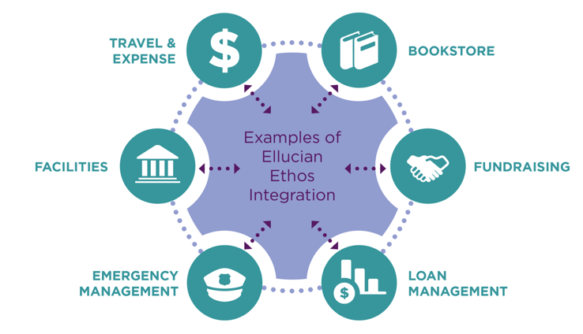
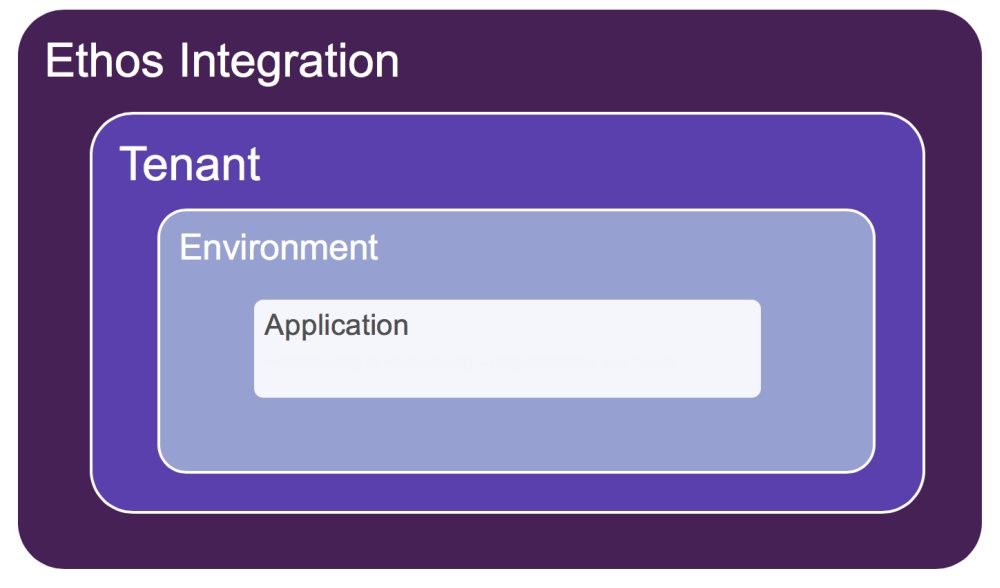
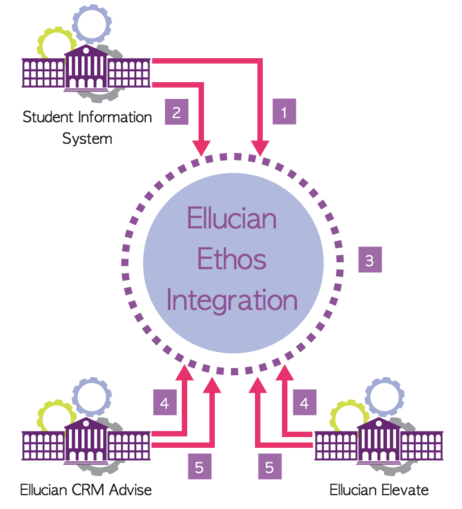
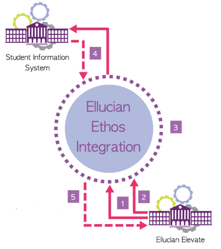
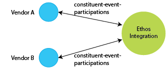
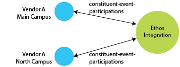
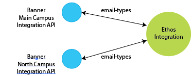
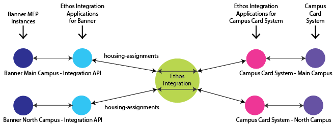
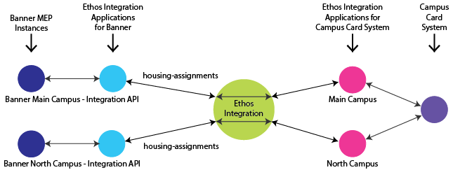

Ethos Integration overview
Ellucian Ethos Integration acts as a data conduit between applications, allowing them to participate in a messaging enterprise that is configurable by each individual institution.
Based on open standards and a microservices architecture, Ellucian Ethos Integration allows applications to integrate in real-time regardless of whether they are deployed on premises or in the cloud.

Ethos Integration concepts
Ethos Integration components and terminology
What is Ellucian Ethos Integration?
The cloud-native Ellucian Ethos Integration leverages Amazon Web Services. You can use it to provide a single hub that interacts with RESTful APIs, and to subscribe and publish Ellucian Ethos Data Model data changes.
- Amazon Web Services
- RESTful APIs
- Ellucian Ethos Data Model data changes
What are the Ellucian Ethos Integration participation guidelines?
Ellucian Ethos Integration supports two system application messaging flows. There are authoritative and non-authoritative messaging flows.
Publish and Subscribe messaging involves publishing changed entities to Ellucian Ethos Integration, which is responsible for delivering a change notification to a queue for each configured subscriber of the resource that was changed.
Request and Reply messaging is a means by which applications can make requests of resources and Ellucian Ethos Integration can proxy those requests to an application that is authoritative for the resource.
What are RESTful APIs?
Ellucian Ethos Integration uses a set of RESTful APIs.
An API is a specification used as an interface by software components to communicate with each other. REpresentational State Transfer (REST) is a set of principles that define how web standards, such as HTTP and URI, are to be used. APIs that adopt REST principles are stateless and resource-orientated, expose a uniform interface, and use hypermedia as the engine of application state. The client interacting with an application is provided with appropriate options at each step within a work flow.
- They expose resources to represent important concepts and objects.
- They ensure that each resource is uniquely addressable by way of a URI, so that clients can interact with them over HTTP.
- They expose one or more representation (for example, using JSON or XML) of those resources.
- They provide a consistent, standard interface based on standard HTTP methods.
- They ensure that interaction with the API is stateless in nature to provide flexibility in deployment to promote scalability.
- They use hypermedia as the engine of application state.
What is the Ellucian Ethos Data Model?
The Ellucian Ethos Data Model is a collection of key concepts within the domain of Higher Education that unifies information across all systems at an institution in a single source of truth.
Each concept is a separate entity in the model, and introduces a common vocabulary to be used across business and technical audiences, and enable integration between systems. The model is expressed in the form of JSON Schema documents. Ellucian solutions and third-party certified partner applications are frequently developed to support the Ellucian Ethos Data Model for system integration purposes.
What are the roles and responsibilities for authoritative systems supporting the Ellucian Ethos Data Model?
What are the roles and responsibilities for non-authoritative systems supporting the Ellucian Ethos Data Model?
What is an API key?
An API key is a code passed in by the programs calling an API to identify the calling program, its developer, or its user to the website.
API keys track and control API details and use. An API key can act as a unique identifier and a secret token for authentication, and generally has a set of access rights on the API associated with it. Ellucian Ethos Integration services, such as publish, subscribe, or proxy, require a valid access token, which can be attained only if the application has a valid API key. An API key is automatically generated for each application configured in Ellucian Ethos Integration.
What is an access token?
An access token is an object encapsulating the security identity of an application that is connected to Ellucian Ethos Integration. Access tokens store tamper-proof information about the application and are used by Ellucian Ethos Integration services to make security decisions.
For an application to use Ellucian Ethos Integration services, the application must have a valid access token. An access token is returned by the Authentication service upon validation of the application’s API key, which the application provides when invoking the Authentication service.
Access tokens include an expiration datetime, which is the time of creation plus 5 minutes. When an access token expires, the application must invoke the token service again with its API key to get a new access token.
Tenants, environments, and applications
The Ethos Integration tenant for your institution contains multiple Ethos Integration environments (Test, Production, and potentially others), and each environment contains multiple Ethos Integration applications.
Tenants
Within Ethos Integration, each institution has its own tenant. Multi-campus institutions might have multiple tenants, one for each campus.
Environments
Each tenant initially contains two Ethos Integration environments: Test and Production. You can license additional environments if needed to support your Ethos Integration implementation. Environments are independent - data exchanged between applications is contained within a single environment.
Applications
Within an environment, you create an Ethos Integration application for each software system that you want to share data through Ethos Integration. For example, you would likely create an application for your SIS (Banner or Colleague), and additional applications for other Ellucian products, third-party products, and your own custom applications. There is no limit on the number of applications within an environment.

Data exchange methods in Ethos Integration
Ethos Integration supports the exchange of data through publish/subscribe, proxy API requests, and GraphQL requests.
Publish and subscribe
With publish/subscribe, one application publishes change notifications to Ethos Integration and other applications retrieve and process those changes.
An application that owns an Ethos resource (the authoritative application) is responsible for publishing change notifications for changes related to that resource to Ethos Integration. For example, an application that owns the persons resource (typically Banner or Colleague) publishes changes to person information. Other applications can subscribe to those changes. Ethos Integration queues the change notifications for subscribing applications, and the subscribing applications retrieve and process the change notifications that have been queued for them.
Change notifications
These are resource based messages that give the current state of a resource at the time a change occurred. This is what you get when you subscribe to changes for a specific resource that an authoritative application owns.
A change notification does not contain information about what specifically changed in the source system (before and after values). It tells you what happened to the resource (operation) and what data the resource contains (content) at the time of the change.
Business events
These are event-based messages that show specifically what changed in a source system as a result of some event, such as an address change for a person. A business-event is not tied to a resource that is exposed through an API.
The content of a business-event does not have a full representation of any data model. It is more based around the event that occurred in the source system. The content contains details about what exactly was changed.
See Retrieve messages.
Example: Publish and subscribe

- The Student Information System authenticates with Ellucian Ethos Integration and receives a session token response.
- The Student Information System authenticates using the session token to publish change notifications to Ellucian Ethos Integration.
- Ellucian Ethos Integration queues the message for interested subscribers.
- Ellucian CRM Advise and Ellucian Elevate authenticate with Ellucian Ethos Integration and receive a session token response.
- Ellucian CRM Advise and Ellucian Elevate invoke the Message Queue service to retrieve change notifications.
Proxy API requests
With proxy API requests, one application can read or modify data in an authoritative application by making a call through Ethos Integration to the Ethos APIs of the authoritative application.
The Proxy service provides a layer of indirection so that non-authoritative applications do not need to know which application is authoritative for the resource. Making requests of resources through the Proxy service is similar to making direct requests without Ellucian Ethos Integration. The payload of a request is a properly formatted Ellucian Ethos Data Model entity (or defined custom resource). The same methods are used to create (POST), retrieve (GET), update (PUT), and delete (DELETE) resources, with the following differences.
Credentials
While Ellucian Ethos Integration prevents applications from having to know what application is authoritative for a given resource, Ellucian Ethos Integration administrators must know to configure Ellucian Ethos Integration correctly.
- In addition to publishing change requests for resources for which they are authoritative, authoritative applications are expected to expose APIs for CRUD operations – Create, Read, Update, Delete – on those resources.
- APIs exposed by authoritative applications are governed by the applications’ security policies; each application is responsible for securing access to its APIs.
- HTTP basic auth is the lowest common denominator for authenticating requests from client applications. Consequently, service requests are expected to include an established set of credentials.
- To eliminate the need for applications to store credentials locally for every application whose resources need to be invoked, maintenance of application credentials has been centralized in Ellucian Ethos Integration. Each application record can store credentials for the applications whose resources need to be invoked.
Access Token
Invoking resources through Ellucian Ethos Integration requires the inclusion of an access token in the Authorization header.
Use Cases
- Create client application data - A client application creates a new grade, but is not authoritative for grades. It issues a POST request against the Proxy API Service, including a null ID in the Ellucian Ethos Data Model object. The Proxy API identifies the authoritative system for grades and routes the request there. The authoritative system updates its data, assigns an ID (GUID), and issues a response to the Proxy API Service.
- Update client application data - A client application modifies data for a grade, but is not authoritative for grades. It issues a PUT request against the Proxy API Service, which identifies the system that is authoritative for grades. It routes the request to that system, which updates its data and responds to the Proxy AP Service, and routes the response to the client application. The authoritative system is then responsible for publishing the change to Ellucian Ethos Integration by way of a change notification.
- Request client application data - A client application needs to know more information about a person. The client application issues a GET request for the person based on an Ellucian Ethos Data Model ID on the Proxy API Service. The Proxy API Service identifies the authoritative system for the person and routes the request there. The authoritative system builds the Ellucian Ethos Data Model object and returns it in the response.
Example: Proxy API request
The following is an example of how the Ellucian Ethos Integration Proxy API service facilitates request/reply messaging between non-authoritative client applications and authoritative systems.

- Ellucian Elevate authenticates with Ellucian Ethos Integration and receives a session token response.
- Ellucian Elevate uses the session token to call the Proxy API service and requests information.
- Ellucian Ethos Integration determines the authoritative application is the Student Information System and routes the request to the Student Information System’s RESTful API.
- The Student Information System’s API receives the request, processes it, and responds.
- Ellucian Ethos Integration returns the response to Ellucian Elevate.
GraphQL requests
With GraphQL requests, data from the authoritative application is loaded into Ellucian Ethos Data Access, and other applications can read that data by making GraphQL requests through Ethos Integration to Data Access.
These requests use GraphQL, an open-source language and tool for querying data.
- The key benefit of GraphQL requests is improved performance. GraphQL requests can retrieve, in one request, data that would require multiple proxy API requests to the Ethos APIs. For example, consider retrieving a section roster. For a proxy API call to get all students in a section, you would need to write code that calls multiple Ethos APIs such as sections, section-registrations, and persons. With GraphQL, you can design a query that is executed one time, and data is returned from a highly-performant cloud data lake (Data Access).
- GraphQL requests require setting up the authoritative source (such as Banner or Colleague) to load the required data into Data Access.
- GraphQL requests support only reading data. Any requests to modify data will continue to use proxy API calls.
GraphQL requests provide the same data security capabilities as proxy API requests. When you set up an application to make GraphQL requests to Data Access, you specify the Ethos resources to which that application has access. You can also restrict specific properties. For example, you could specify that an application can access data in the persons resource, but deny access to social security number.
See Make GraphQL requests to Data Access.
Responsibilities of participating applications
Applications that participate in Ethos Integration have specific responsibilities.
Responsibilities of an authoritative source application
Authoritative applications must both publish data changes and respond to requests for data.
To support the publish/subscribe workflow, authoritative applications are responsible for publishing change notifications to Ethos Integration for resources for which they are authoritative. They always publish a change notification containing the most recent version of the Ellucian Ethos Data Model
To support requests for data, authoritative applications must respond to request and reply messaging through the Ethos Integration Proxy API Service by way of their RESTful APIs. They are responsible for exposing both the most recent version and prior supported versions of Ellucian Ethos Data Model resources through their RESTful APIs.
Responsibilities of a subscribing application
Subscribing applications are not authoritative for a particular resource, although they may be authoritative for other resources. To keep the subscribing application’s data store synchronized with the application that is authoritative for the resource, subscribing applications are responsible for retrieving and processing change notifications that have been queued for them. They retrieve change notifications through the Ellucian Ethos Integration Message Queue service.
As non-authoritative systems – at least for specific resources – subscribing applications additionally might request specific data by issuing Create, Read, Update, or Delete (CRUD) requests on resources through the Ethos Integration Proxy API service, or Read requests to Ellucian Ethos Data Access through the GraphQL service.
Data security
Protecting sensitive data is imperative for modern enterprises, as attackers find increasingly innovative ways to compromise systems and steal data.
Ellucian provides technology and features that are designed to keep your data secure. Encryption plays a major role in data protection, securing data both in transit and at rest.
Data sovereignty
To help comply with varying data sovereignty requirements from region to region, Ellucian provides a cloud solution in a number of geographic regions.
These regions include:
- United States
- Canada
- Europe
- Asia-Pacific
- Middle East
Refer to Ethos Integration domains for information regarding calls to the Ethos Integration APIs to include the region-specific domain.
Communication hub
Ethos Integration is the communication hub that allows central access to facilitate communication with many different systems.
Ethos Integration defines which applications are authoritative for resources and applications that subscribe to Ellucian Ethos Data Model changes.
Applications that want to invoke Ethos APIs require a credential for Ethos Integration to authenticate to the authoritative system.
Ethos Integration provides applications an API key, which is used to authenticate to Ethos Integration.
Ethos Integration is in control of defining what information applications are allowed to access. The administrator who configures Ethos Integration on behalf of the authoritative system needs to understand the security controls for the authoritative system to be able to set up those applications in a secure manner.
API key authentication
Ethos Integration generates an API key for each application when application definitions are created on the Ethos Integration Admin console. These API keys are used to uniquely identify each application in the given tenant environment.
Each integrated application uses its API key to authenticate with Ethos Integration, which returns an access token in JSON Web Token (JWT) format required to invoke APIs. Refer to Invoke the Authentication service to get an access token.
Ellucian recommends that you set up an API key expiration policy, just as you have a password expiration policy. If an API key is potentially exposed, shared, or stolen, you should generate a new API key.
Privacy controls
If access to the API is invoked, the authoritative system returns a data model supporting the authoritative source security requirements, which might remove properties that are considered personally identifiable information (PII).
An authoritative system might remove properties from a data model that are considered sensitive, or PII. Ethos Integration delegates API security to the authoritative system.
Shared responsibility model
Ellucian
Ellucian provides capabilities within the Ethos API application toolset to restrict access to data and filter data model properties on a per-application basis.
Ellucian implements Amazon Web Services (AWS) security best practices. All Ellucian cloud solutions have the same logging format, enabling Ellucian to track when applications request data. This enables Ellucian to support audit and incident management requests.
Configuration
Applications integrated through Ellucian Ethos are allowed access only to the data that the client authorizes them to access. This is controlled in Ethos Integration and in the authoritative system’s security implementation.
Secure data in transit
Data in transit, or data in motion, is data actively moving from one location to another such as across the internet or through a private network. Data protection in transit is the protection of this data while it is traveling from network to network or being transferred from a local storage device to a cloud storage device. Wherever data is moving, effective data protection measures for in-transit data are critical as data is often considered less secure while in motion.
All applications that connect to Ethos Integration to make data requests must use safe encryption technology TLS 1.1 or 1.2 protocols. This includes Ellucian cloud-native applications.
Secure data at rest
Data at rest is data that is not actively moving from device to device or network to network, such as data stored on a hard drive, laptop, flash drive, or stored in some other way. Data protection at rest aims to secure inactive data stored on any device or network. While data at rest is sometimes considered to be less vulnerable than data in transit, attackers often find data at rest a more valuable target than data in motion. The risk profile for data in transit or data at rest depends on the security measures that are in place to secure data in either state.
All data that is queued in the Ethos Cloud, waiting for subscribing systems to collect, is encrypted at rest. Data is encrypted at rest with AWS storage encryption.
The user
Every application definition in Ethos Integration should have a separate credential to the authoritative system. That is the only way to track what the applications do.
The API key is a sensitive credential and should not be shared. Ellucian recommends that you define an API Key expiration policy.
Ellucian recommends that you support a least-privileged-access security model. Define rules for the application and what APIs are accessible to an application and, if accessible, what operations users can perform (such as read versus write access). Define content filtering rules that are applicable for every application requesting data. For normal abilities, personally identifiable information (PII) data is often not needed and can be filtered.
Support for multiple ownership of resources
In Ellucian Ethos Integration, multiple authoritative sources can own the same resource.
- Multiple vendors manage the same information
- Multiple instances of a vendor application
- Banner Multi-Entity Processing (MEP)
This section provides a description of multiple ownership. See the links below for the procedures for implementing multiple ownership.
Multiple owner use cases
The multi-owner capability of Ellucian Ethos Integration supports situations where more than one application is responsible for the data in a data model.
Several use cases are described below. These descriptions show only the authoritative applications. For an example that shows both the authoritative applications and an application that accesses the data, see Example: Banner MEP and Campus Card System.
Multiple vendors manage the same information
Example: You use two vendor applications that both manage events on campus. Each vendor application maintains information about the events that it manages, so each needs to own the Ethos resources related to events (including, for example, the constituent-event-participations resource).

Multiple instances of a vendor application
Example: You use a vendor application that manages events on campus. You have installed two instances of that vendor application, one to manage events on the Main Campus and one to manage events on the North Campus. Each instance of the vendor application maintains information about the events that it manages, so each needs to own the Ethos resources related to events (including, for example, the constituent-event-participations resource).

Banner Multi-Entity Processing (MEP)
Example: You have set up Banner MEP with two instances: Main Campus and North Campus. Each instance maintains information about its campus, so each needs to own all of the Ethos resources for which Banner is responsible (including, for example, the email-types resource).

Ethos Integration capabilities that support multiple ownership of resources
The setup of resource ownership, subscriptions, and proxy API requests all support multiple ownership of resources.
| Feature | Ethos Integration multi-owner capability |
|---|---|
| Resource ownership | Multiple applications can own the same resource. One application is the default owner. The first application to which you assign a resource is initially the default owner, but you can specify a different default owner for a resource. |
| Subscriptions | When you assign subscriptions to a consuming application, all of the instances of a resource (from all owners) are available for selection. You select the appropriate instance for this application. |
| Proxy API requests | A consuming application can make proxy API requests to the owner of a resource. When a resource is owned by multiple authoritative sources, you can create a resource request to specify which authoritative source the proxy API request goes to. Proxy API requests go to the default owner of a resource unless you create a resource request. |
Example: Banner MEP and Campus Card System
This example shows both the authoritative application (Banner) and a Campus Card System application that needs access to Banner-owned resources.
The Campus Card System needs access to building information that is in the housing-assignments data model, so that it can control access to campus housing. Banner is authoritative for the housing-assignments data model.
One-to-one relationship between authoritative and consuming applications
This first example assumes that you have installed two instances of the Campus Card System application, one for each campus. In this example, the Main Campus instance of the Campus Card System application needs access to data in the Main Campus MEP instance, while the North Campus instance of the Campus Card System application needs access to data in the North Campus MEP instance.

- Create the following Ethos Integration applications:
- Banner Main Campus Integration API
- Banner Main Campus Student API
- Banner North Campus Integration API
- Banner North Campus Student API
- Campus Card System Main Campus
- Campus Card System North Campus
- Assign resources to the four Ethos Integration applications for Banner. The housing-assignments data model would be owned by both the Banner Main Campus Integration API application and the Banner North Campus Integration API application.
- If you want the Campus Card System to subscribe to Banner-published changes for housing assignments:
- Set up subscriptions for the Main Campus:
- In the Ethos Integration application for Campus Card System Main Campus, add a subscription to the housing-assignments resource. Because that resource is owned by two Banner applications, you would need to select the instance of the resource that is owned by Banner Main Campus Integration API.
- Set up the Campus Card System application itself (Main Campus instance) to retrieve change notifications through Ethos Integration, using the API key for the Ethos Integration application for Campus Card System Main Campus when generating the authentication token.
- Use the same process to set up a subscription from the Campus Card System North Campus instance to changes published by Banner North Campus.
- Set up subscriptions for the Main Campus:
- If you want the Campus Card System to make proxy API requests to Banner for housing assignments data:
- Set up proxy API requests for the Main Campus:
- In the Ethos Integration application for Campus Card System Main Campus, set up proxy API requests to the housing-assignments resource. Create a resource request to ensure that the proxy API request goes to Banner Main Campus Integration API (not required if Banner Main Campus Integration API is the default owner of housing-assignments).
- Set up the Campus Card System application itself (Main Campus instance) to make proxy API requests through Ethos Integration, using the API key for the Ethos Integration application for Campus Card System Main Campus when generating the authentication token.
- Use the same process to set up proxy API requests from the Campus Card System North Campus to Banner North Campus.
- Set up proxy API requests for the Main Campus:
Many-to-one relationship between authoritative and consuming applications
This example assumes that you have installed one instance of the Campus Card System application, which needs access to data in both the Main Campus and North Campus Banner applications.

- Create the following Ethos Integration applications:
- Banner Main Campus Integration API
- Banner Main Campus Student API
- Banner North Campus Integration API
- Banner North Campus Student API
- Campus Card System Main Campus
- Campus Card System North Campus
Note that you create two Ethos Integration applications for the Campus Card System, even though there is only one instance of the Campus Card System itself.
- Assign resources to the four Ethos Integration applications for Banner. The housing-assignments data model would be owned by both the Banner Main Campus Integration API application and the Banner North Campus Integration API application.
- If you want the Campus Card System to subscribe to Banner-published changes for housing assignments:
- Set up subscriptions for the Main Campus:
- In the Ethos Integration application for Campus Card System Main Campus, add a subscription to the housing-assignments resource. Because that resource is owned by two Banner applications, you would need to select the instance of the resource that is owned by Banner Main Campus Integration API.
- Set up the Campus Card System application itself to retrieve change notifications through Ethos Integration, using the API key for the Ethos Integration application for Campus Card System Main Campus when generating the authentication token.
- Use the same process to set up a subscription from the Campus Card System to changes published by Banner North Campus.
- Set up subscriptions for the Main Campus:
- If you want the Campus Card System to make proxy API requests to Banner for housing assignments data:
- Set up proxy API requests for the Main Campus:
- In the Ethos Integration application for Campus Card System Main Campus, set up proxy API requests to the housing-assignments resource. Create a resource request to ensure that the proxy API request goes to Banner Main Campus Integration API (not required if Banner Main Campus Integration API is the default owner of housing-assignments).
- Set up the Campus Card System application itself to make proxy API requests through Ethos Integration, using the API key for the Ethos Integration application for Campus Card System Main Campus when generating the authentication token.
- Use the same process to set up proxy API requests from the Campus Card System to Banner North Campus.
- Set up proxy API requests for the Main Campus:
Download end user agreement
Ellucian does not require a signed copy of this agreement before you can use Ellucian Ethos. However, you can download and sign it if you would like to have a copy for your own records.
To download the end user agreement, click Attachment on this page.
on this page.
If your institution requires a copy of this agreement that is signed by you and countersigned by Ellucian, you can return a signed copy to us by mail at:
Ellucian
2003 Edmund Halley Drive, Suite 500
Reston, VA 20191
We also will accept a copy of this Amendment with your authorized signature transmitted to us electronically, to ContractsManagement@ellucian.com.
Ethos Integration domains
Some procedures require that you specify the domain for Ethos Integration in the Ellucian cloud. Use the domain for your region.
| Region | Domain |
|---|---|
| U.S. | integrate.elluciancloud.com |
| Canada | integrate.elluciancloud.ca |
| Europe | integrate.elluciancloud.ie |
| Asia-Pacific | integrate.elluciancloud.com.au |
| Middle East | integrate.elluciancloud.me |